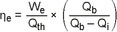
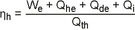

17. BImSchV
Ausfertigungsdatum: 02.05.2013
Vollzitat:
"Verordnung über die Verbrennung und die Mitverbrennung von Abfällen vom 2. Mai 2013 (BGBl. I S. 1021, 1044, 3754), die zuletzt durch Artikel 1 der Verordnung vom 13. Februar 2024 (BGBl. 2024 I Nr. 43) geändert worden ist"
| Stand: | Zuletzt geändert durch Art. 1 V v. 13.2.2024 I Nr. 43 |
(+++ Textnachweis ab: 2.5.2013 +++)Die V wurde als Artikel 3 der V v. 2.5.2013 I 1021 von der Bundesregierung und dem Bundesministerium für Verkehr, Bau und Stadtentwicklung, nach Anhörung der beteiligten Kreise, im Einvernehmen mit dem Bundesministerium der Finanzen und dem Bundesministerium für Wirtschaft und Technologie, unter Wahrung der Rechte des Bundestages gemäß § 48b des Bundes-Immissionsschutzgesetzes sowie mit Zustimmung des Bundesrates beschlossen. Sie ist gem. Art. 10 Abs. 1 dieser V am 2.5.2013 in Kraft getreten.
| § 1 | Anwendungsbereich |
| § 2 | Begriffsbestimmungen |
| § 3 | Anforderungen an die Anlieferung, die Annahme und die Zwischenlagerung der Einsatzstoffe |
| § 4 | Errichtung und Beschaffenheit der Anlagen |
| § 5 | Betriebsbedingungen |
| § 6 | Verbrennungsbedingungen für Abfallverbrennungsanlagen |
| § 7 | Verbrennungsbedingungen für Abfallmitverbrennungsanlagen |
| § 8 | Emissionsgrenzwerte für Abfallverbrennungsanlagen |
| § 9 | Emissionsgrenzwerte für Abfallmitverbrennungsanlagen |
| § 10 | Im Jahresmittel einzuhaltende Emissionsgrenzwerte |
| § 11 | Ableitungsbedingungen für Abgase |
| § 12 | Behandlung der bei der Abfallverbrennung und Abfallmitverbrennung entstehenden Rückstände |
| § 13 | Energieeffizienz |
| § 14 | Messplätze |
| § 15 | Messverfahren und Messeinrichtungen |
| § 16 | Kontinuierliche Messungen |
| § 17 | Auswertung und Beurteilung von kontinuierlichen Messungen |
| § 18 | Periodische Messungen |
| § 19 | Berichte und Beurteilung von periodischen Messungen |
| § 20 | Besondere Überwachung der Emissionen an Schwermetallen |
| § 20a | Besondere Überwachung während Betriebszuständen außerhalb des Normalbetriebs |
| § 21 | Störungen des Betriebs |
| § 22 | Jährliche Berichte über Emissionen |
| § 23 | Veröffentlichungspflichten |
| § 24 | Zulassung von Ausnahmen |
| § 25 | Weitergehende Anforderungen und wesentliche Änderungen |
| § 26 | Zugänglichkeit und Gleichwertigkeit von Normen und Arbeitsblättern |
| § 27 | Ordnungswidrigkeiten |
| § 28 | Übergangsregelungen |
| Anlage 1 (zu § 8 Absatz 1, § 18 Absatz 5 und 6 und § 20 Absatz 1) | Emissionsgrenzwerte für Schwermetalle und krebserzeugende Stoffe |
| Anlage 2 (zu Anlage 1 Buchstabe d und e) | Äquivalenzfaktoren – polychlorierte Dibenzodioxine, Dibenzofurane und dl-PCB |
| Anlage 2a (zu § 18 Absatz 3) | Zu ermittelnde polybromierte Dibenzo-p-dioxine und Furane |
| Anlage 3 (zu § 9, § 10 Absatz 2, § 16 Absatz 1 und 4, § 17 Absatz 1 und 5, § 18 Absatz 2, § 19 Absatz 2, § 21 Absatz 3 und § 22 Absatz 1) | Emissionsgrenzwerte für die Mitverbrennung von Abfällen |
| Anlage 4 (zu § 15 Absatz 1, § 16 Absatz 1 und § 17 Absatz 5) | Anforderungen an die kontinuierlichen Messeinrichtungen und die Validierung der Messergebnisse |
| Anlage 5 (zu § 2 Absatz 12) | Umrechnungsformel |
| Anlage 6 (zu § 4 Absatz 1) | Umweltmanagementsysteme |
| Anlage 7 (zu § 13 Absatz 3) | Energieeffizienz von Abfallverbrennungsanlagen |
| Gesamtstaub | 5 mg/m3, |
| organische Stoffe, angegeben als Gesamtkohlenstoff, | 10 mg/m3, |
| gasförmige anorganische Chlorverbindungen, angegeben als Chlorwasserstoff, | 6 mg/m3, |
| gasförmige anorganische Fluorverbindungen, angegeben als Fluorwasserstoff, | 0,9 mg/m3, |
| Schwefeldioxid und Schwefeltrioxid, angegeben als Schwefeldioxid, | 30 mg/m3, |
| Stickstoffmonoxid und Stickstoffdioxid, angegeben als Stickstoffdioxid, | 120 mg/m3, |
| Quecksilber und seine Verbindungen, angegeben als Quecksilber, | 0,01 mg/m3, |
| Kohlenmonoxid | 50 mg/m3, |
| Ammoniak, sofern zur Minderung der Emissionen von Stickstoffoxiden ein Verfahren zur selektiven katalytischen oder nichtkatalytischen Reduktion eingesetzt wird | 10 mg/m3; |
| Gesamtstaub | 20 mg/m3, |
| organische Stoffe, angegeben als Gesamtkohlenstoff, | 20 mg/m3, |
| gasförmige anorganische Chlorverbindungen, angegeben als Chlorwasserstoff, | 40 mg/m3, |
| gasförmige anorganische Fluorverbindungen, angegeben als Fluorwasserstoff, | 4 mg/m3, |
| Schwefeldioxid und Schwefeltrioxid, angegeben als Schwefeldioxid, | 200 mg/m3, |
| Stickstoffmonoxid und Stickstoffdioxid, angegeben als Stickstoffdioxid, | 400 mg/m3, |
| Quecksilber und seine Verbindungen, angegeben als Quecksilber, | 0,035 mg/m3, |
| Kohlenmonoxid | 100 mg/m3, |
| Ammoniak, sofern zur Minderung der Emissionen von Stickstoffoxiden ein Verfahren zur selektiven katalytischen oder nichtkatalytischen Reduktion eingesetzt wird | 15 mg/m3; |
| Stickstoffmonoxid und Stickstoffdioxid, angegeben als Stickstoffdioxid, | 100 mg/m3, |
| Quecksilber und seine Verbindungen, angegeben als Quecksilber, | 0,005 mg/m3. |
| Cadmium und seine Verbindungen, angegeben als Cadmium, Thallium und seine Verbindungen, angegeben als Thallium, | , |
| 50 MW bis weniger | insgesamt |
| als 300 MW: | 0,012 mg/m³, |
| 300 MW oder mehr: | insgesamt |
| 0,006 mg/m³, |
| in mit Biobrennstoffen gefeuerten abfallmitverbrennenden Großfeuerungsanlagen: | insgesamt |
| 0,005 mg/m³, |
| in Anlagen nach Anlage 3 Nummer 2: | insgesamt |
| 0,05 mg/m³, |
| in allen anderen Verbrennungs- und Mitverbrennungsanlagen: | insgesamt |
| 0,02 mg/m³, |
| Antimon und seine Verbindungen, angegeben als Antimon, Arsen und seine Verbindungen, angegeben als Arsen, Blei und seine Verbindungen, angegeben als Blei, Chrom und seine Verbindungen, angegeben als Chrom, Cobalt und seine Verbindungen, angegeben als Cobalt, Kupfer und seine Verbindungen, angegeben als Kupfer, Mangan und seine Verbindungen, angegeben als Mangan, Nickel und seine Verbindungen, angegeben als Nickel, Vanadium und seine Verbindungen, angegeben als Vanadium, Zinn und seine Verbindungen, angegeben als Zinn, |
| in kohlegefeuerten abfallmit- verbrennenden Großfeue- rungsanlagen mit einer Feuerungswärmeleistung von 300 MW oder mehr: | insgesamt |
| 0,2 mg/m³, |
| in mit Biobrennstoffen gefeuerten abfallmitverbrennenden Großfeuerungsanlagen: | insgesamt |
| 0,3 mg/m³, |
| in Anlagen nach Anlage 3 Nummer 2: | insgesamt |
| 0,5 mg/m³, |
| in allen anderen Verbrennungs- und Mitverbrennungsanlagen: | insgesamt |
| 0,3 mg/m³, |
| Arsen und seine Verbindungen (außer Arsenwasserstoff), angegeben als Arsen, Benzo(a)pyren, Cadmium und seine Verbindungen, angegeben als Cadmium, wasserlösliche Cobaltverbindungen, angegeben als Cobalt, Chrom(VI)verbindungen (außer Bariumchromat und Bleichromat), angegeben als Chrom | insgesamt 0,05 mg/m3 |
| oder Arsen und seine Verbindungen, angegeben als Arsen, Benzo(a)pyren, Cadmium und seine Verbindungen, angegeben als Cadmium, Cobalt und seine Verbindungen, angegeben als Cobalt, Chrom und seine Verbindungen, angegeben als Chrom, | insgesamt 0,05 mg/m3 |
| Dioxine, Furane und polychlorierte Biphenyle gemäß Anlage 2 |
| in abfallmitverbrennenden Großfeuerungsanlagen: | insgesamt |
| 0,03 ng/m³, |
| in Anlagen nach Anlage 3 Nummer 2: | insgesamt |
| 0,1 ng/m³, |
| in allen bestehenden Verbrennungs- und Mitverbrennungsanlagen, die keine abfallmitverbrennenden Großfeuerungsanlagen oder Anlagen nach Anlage 3 Nummer 2 sind: | insgesamt |
| 0,08 ng/m³, |
| in allen anderen Verbrennungs- und Mitverbrennungsanlagen: | insgesamt |
| 0,06 ng/m³, |
| in bestehenden Abfallverbrennungsanlagen: | insgesamt |
| 0,1 ng/m³, |
| in anderen Abfallverbrennungsanlagen: | insgesamt |
| 0,08 ng/m³. |
| Stoff | Äquivalenzfaktor | |
|---|---|---|
| Polychlorierte Dibenzodioxine (PCDD) | WHO-TEF 2005 | |
| 2,3,7,8 | – Tetrachlordibenzodioxin (TCDD) | 1 |
| 1,2,3,7,8 | – Pentachlordibenzodioxin (PeCDD) | 1 |
| 1,2,3,4,7,8 | – Hexachlordibenzodioxin (HxCDD) | 0,1 |
| 1,2,3,7,8,9 | – Hexachlordibenzodioxin (HxCDD) | 0,1 |
| 1,2,3,6,7,8 | – Hexachlordibenzodioxin (HxCDD) | 0,1 |
| 1,2,3,4,6,7,8 | – Heptachlordibenzodioxin (HpCDD) | 0,01 |
| Octachlordibenzodioxin (OCDD) | 0,0003 | |
| Polychlorierte Dibenzofurane (PCDF) | WHO-TEF 2005 | |
| 2,3,7,8 | – Tetrachlordibenzofuran (TCDF) | 0,1 |
| 2,3,4,7,8 | – Pentachlordibenzofuran (PeCDF) | 0,3 |
| 1,2,3,7,8 | – Pentachlordibenzofuran (PeCDF) | 0,03 |
| 1,2,3,4,7,8 | – Hexachlordibenzofuran (HxCDF) | 0,1 |
| 1,2,3,7,8,9 | – Hexachlordibenzofuran (HxCDF) | 0,1 |
| 1,2,3,6,7,8 | – Hexachlordibenzofuran (HxCDF) | 0,1 |
| 2,3,4,6,7,8 | – Hexachlordibenzofuran (HxCDF) | 0,1 |
| 1,2,3,4,6,7,8 | – Heptachlordibenzofuran (HpCDF) | 0,01 |
| 1,2,3,4,7,8,9 | – Heptachlordibenzofuran (HpCDF) | 0,01 |
| Octachlordibenzofuran (OCDF) | 0,0003 | |
| Polychlorierte Biphenyle | WHO-TEF 2005 | |
| Non ortho PCB | ||
| PCB 77 | 0,0001 | |
| PCB 81 | 0,0003 | |
| PCB 126 | 0,1 | |
| PCB 169 | 0,03 | |
| Mono ortho PCB | ||
| PCB 105 | 0,00003 | |
| PCB 114 | 0,00003 | |
| PCB 118 | 0,00003 | |
| PCB 123 | 0,00003 | |
| PCB 156 | 0,00003 | |
| PCB 157 | 0,00003 | |
| PCB 167 | 0,00003 | |
| PCB 189 | 0,00003 | |
| 2,3,7,8- | Tetrabromdibenzodioxin (TBDD) |
| 1,2,3,7,8- | Pentabromdibenzodioxin (PeBDD) |
| 1,2,3,4,7,8- | Hexabromdibenzo-p-dioxin (HxBDD) |
| 1,2,3,7,8,9- | Hexabromdibenzodioxin (HxBDD) |
| 1,2,3,6,7,8- | Hexabromdibenzodioxin (HxBDD) |
| 2,3,7,8- | Tetrabromdibenzofuran (TBDF) |
| 1,2,3,7,8- | Pentabromdibenzofuran (PeBDF) |
| 2,3,4,7,8- | Pentabromdibenzofuran (PeBDF) |
| Emissionsparameter | C | |
|---|---|---|
| a) | Gesamtstaub | 10 |
| b) | gasförmige anorganische Chlorverbindungen, angegeben als Chlorwasserstoff | 10 |
| c) | gasförmige anorganische Fluorverbindungen, angegeben als Fluorwasserstoff | 1 |
| d) | Stickstoffmonoxid und Stickstoffdioxid, angegeben als Stickstoffdioxid in | |
| aa) Anlagen zur Herstellung von Zementklinkern und Zement | 200 | |
| bb) Anlagen zum Brennen von Kalk | 350 | |
| e) | Schwefeldioxid und Schwefeltrioxid, angegeben als Schwefeldioxid | 50 |
| f) | organische Stoffe, angegeben als Gesamtkohlenstoff | 10 |
| g) | Quecksilber und seine Verbindungen, angegeben als Quecksilber | 0,03 |
| h) | Ammoniak, sofern zur Minderung der Emissionen von Stickstoffoxiden ein Verfahren zur selektiven katalytischen oder nichtkatalytischen Reduktion eingesetzt wird | 30 |
| Emissionsparameter | C | |
|---|---|---|
| a) | Gesamtstaub | 30 |
| b) | gasförmige anorganische Chlorverbindungen, angegeben als Chlorwasserstoff | 60 |
| c) | gasförmige anorganische Fluorverbindungen, angegeben als Fluorwasserstoff | 4 |
| d) | Schwefeldioxid und Schwefeltrioxid, angegeben als Schwefeldioxid | 200 |
| e) | Quecksilber und seine Verbindungen, angegeben als Quecksilber | 0,05 |
| Emissionsparameter | C |
| Stickstoffmonoxid und Stickstoffdioxid, angegeben als Stickstoffdioxid | 200 |
| Emissionsparameter | C | |
|---|---|---|
| a) | Gesamtstaub | 10 |
| b) | gasförmige anorganische Chlorverbindungen, angegeben als Chlorwasserstoff | 10 |
| c) | organische Stoffe, angegeben als Gesamtkohlenstoff | 10 |
| d) | Quecksilber und seine Verbindungen, angegeben als Quecksilber | 0,03 |
| Emissionsparameter | C | |
|---|---|---|
| a) | gasförmige anorganische Chlorverbindungen, angegeben als Chlorwasserstoff | 60 |
| b) | Quecksilber und seine Verbindungen, angegeben als Quecksilber | 0,05 |
| Emissionsparameter | C | |
|---|---|---|
| Stickstoffmonoxid und Stickstoffdioxid, angegeben als Stickstoffdioxid, bei einer Feuerungswärmeleistung von | ||
| a) | 50 MW bis 100 MW | 250 |
| b) | mehr als 100 MW | 100 |
| Kohlenmonoxid | 10 Prozent, |
| Schwefeldioxid | 20 Prozent, |
| Stickstoffoxid | 20 Prozent, |
| Gesamtstaub | 30 Prozent, |
| Organisch gebundener Gesamtkohlenstoff | 30 Prozent, |
| Chlorwasserstoff | 40 Prozent, |
| Fluorwasserstoff | 40 Prozent, |
| Quecksilber | 40 Prozent. |
| Ammoniak | 40 Prozent. |
| Mindestanforderungen an Energieeffizienzwerte (in Prozent) | ||||
| Anlage | Feste Siedlungsabfälle und sonstige nicht gefährliche Abfälle sowie gefährliche Holzabfälle | Gefährliche Abfälle mit Ausnahme von gefährlichen Holzabfällen1 | Klärschlamm | |
| Elektrischer Gesamt- wirkungsgrad (brutto)2 , 3 | Brutto- energieeffizienz4 | Kesselwirkungsgrad | ||
| Bestehende Anlage | 20 | 725 | 60 | 606 |
| Alle anderen Anlagen | 25 | |||
| ||||
| Elektrischer Bruttowirkungsgrad |  |
| Bruttoenergieeffizienz |  |
| • | Qb: | Wärmeleistung, die vom Kessel erzeugt wird, in MW; |
| • | Qde: | direkt abgegebene Wärmeleistung (als Dampf oder Heißwasser) abzüglich der Wärmeleistung des Rücklaufs, in MW; |
| • | Qhe: | Wärmeleistung, die den Wärmetauschern auf der Primärseite zugeführt wird, in MW; |
| • | Qi: | Wärmeleistung (als Dampf oder Heißwasser), die intern genutzt wird (z. B. zur Abgasaufheizung oder Entnahme vor Entnahmekondensationsturbinen), in MW* ; |
| • | Qth: | Wärmeeintrag in die thermischen Behandlungseinrichtungen (zum Beispiel Feuerraum) einschließlich der Abfälle und Hilfsbrennstoffe, die kontinuierlich genutzt werden (ausgenommen zum Beispiel für die Anfahrphase), in MWth, ausgedrückt als unterer Heizwert; |
| • | We: | Erzeugte elektrische Leistung in MW. |